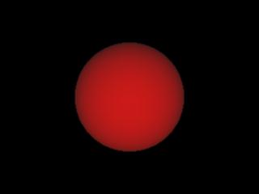

Material
Shaders
This section
shows the basic workflow for mental ray material shaders in Maya.
References:
mental ray User Manual, Chapter 3.8.
mental ray Shaders Guide, Chapter 1.6.
Rendering with mental ray, Chapter 4, Appendix C, D.
Where to find material shaders
Material shaders appear in the Hypershade > Create mental ray Nodes
> Materials.
The following material shaders shipped with Maya:
- dgs_material
- dielectric_material
- mib_illum_blinn
- mib_illum_cooktorr
- mib_illum_hair
- mib_illum_lambert
- mib_illum_phong
- mib_illum_ward_deriv
- path_material
- transmat
Default behavior
A material shader is created with its own shading engine like
maya materials.
The proper connection for a material shader is from
materialShader.message to shadingEngine.miMaterialShader.
Ctrl+drag from a material shader to a shading engine to make
the above connection.
MMB+drag to an object, then right-mouse click the object for
supported material shaders.
Step 1. Getting Ready
Make sure the mental ray plug-in is loaded:
- Windows > Settings/Preferences > Plug-in
Manager...
- Find Mayatomr and check loaded
Open the template scene we will use for this
section: materialShaders_start.ma.
Step 2. Assign a material shader
Step 3. Adjust shader parameters
Now we are
ready to render
with mental ray.
Step 4. Automatic light linking
The sphere is rendered with
mib_illum_lambert, illuminated by two lights.
If you have used mental ray shaders in
previous versions of Maya, you would have noticed lights weren’t connected
to the material.
mental ray for Maya 6.0 provides automatic
light linking at rendering time, if the light array parameters are not
connected. In other words, when rendering and exporting the scene, mental
ray for Maya 6.0 looks up the Maya light linking information between lights
and the object, and connects light nodes to the light array parameters of
the shader.
The automatic light linking happens only if
the light array parameter is not connected to any light. If the shader is
assigned to two different objects, and those two objects have different
light linking, one light linking relationship will be applied to both
objects. The default light is not considered in the automatic light
linking.
If mode is set 2, the object is
illuminated by unlinked lights only.
To see what mental ray for Maya does under
the hood, export the scene to .mi, and check the shading connections.
- File > Export All option
box
- Set File Type : mentalRay. File
Format : ASCII
- Export All
Following code in the export mi file shows that the
light transform nodes are connected to the lights array parameter of
mib_illum_lambert.
shader "mib_illum_lambert1"
"mib_illum_lambert" (
"ambience"
0.2 0.2 0.2 1.,
"ambient"
0.5 0.5 0.5 1.,
"diffuse"
0.834 0.834 0.834 1.,
"mode"
0,
"lights"
[
"pointLight1",
"directionalLight1"
]
)
Change
the light linking, and render
again.
|

|
|
Using
maya light linking
|
The Maya light linking is respected, and the
sphere renders red.
Revert
back to the original light linking status.
materialShaders_basic.ma is saved at this
point to help you if there was any problem so far. Check the connection in
materialShaders_basic.ma.
To disable the automatic light linking for a shader even if the light array
parameters are not connected, create a dynamic attribute miLightLink, and set the value
to 0.
For
example,
addAttr -ln
"miLightLink" -at bool dgs_material1
SetAttr
dgs_material1.miLightLink 0
Step 5. Connecting lights to the shader manually
There are many different workflows to connect lights to a
shader manually.
- Drag and drop in Hypershade
- Drag and drop light SHAPE node to the
shader (mib_illum_lambert1).
- You won't see any connection between the
light shape node and the shader. The actual connection is made
between light TRANSFORM node and the shader. This is the
easiest way to make light connections.
- Drag and drop in Attribute Editor
- Open the Attribute Editor of the shader (mib_illum_lambert1).
- Open last section Lights of the
Attribute Editor.
- The Attribute Editor shows lights[0].
- Drag and drop the light transform node to
lights[0].
- Using MEL command
- connectAttr
pointLight1.message mib_illum_lambert.lights[0];
Choose one
of the workflow described above, and connect
pointLight1 to the lambert shader.
Render
with mental ray again.
Even though
light linking editor shows that both lights are connected to the sphere,
mental ray used point light only to light the sphere.
|

|
|
Using
manual light linking
|
Step 5. Cornell box
The Cornell box scene below (cornellBox_materials.ma)
uses three different kinds of mental ray material shaders.
|

|
|
cornellBox_materials.ma
|
The same workflow described above for mib_illum_lambert
applies to the following material shaders.
·
dgs_material
A very diffuse dgs_material is used on red left wall, blue right wall and
white floor and ceiling.
dgs_material shader is also used to achieve highly reflective mirror like
material for the ball on the floor.
·
dielectric_material
dielectric_material is used to create a glass like refractive material for
the floating ball.
·
transmat
front, back and the cover for the area light share transmat1.
An object with transmat material is rendered invisible. The common usage
for transmat material in conjunction with a volume shader or photon volume
shader to create an atmospheric effect.
See volumeShaders.html to see how
transmat can be used with a volume shader to achieve a smoke effect.
(This Cornell box scene is used in other sections to add
global illumination and volumes.)
|